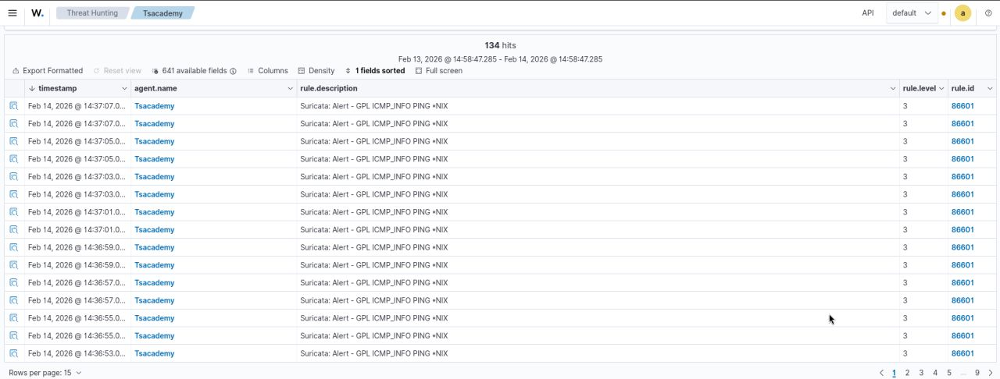

PROJECT 01 / NETWORK DEFENCESIEM · IDS · NETWORK MONITORING
Monitoring & Detecting Network Traffic with Wazuh + Suricata
I built a hands-on home lab focused on network monitoring and threat detection using Wazuh integrated with Suricata. The project explored how network-based events can be collected, surfaced and investigated in a SIEM workflow.
Objective
Understand how network-based threats can be detected and analysed in a SIEM environment by generating and reviewing controlled lab traffic.
My contribution
- Installed and configured network intrusion detection tooling in a lab.
- Explored integration of network security events into a SIEM workflow.
- Reviewed alerts and learned how detection logic is represented.
- Studied response concepts, including blocking suspicious traffic in a controlled environment.
WazuhSuricataVirtualisationSecurity monitoring
Status: As described by project owner — completed